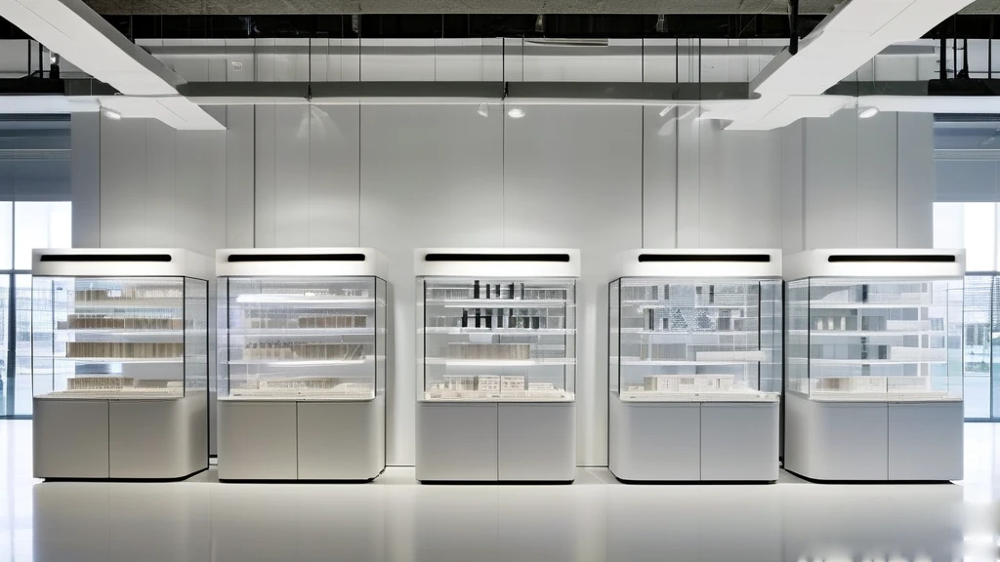
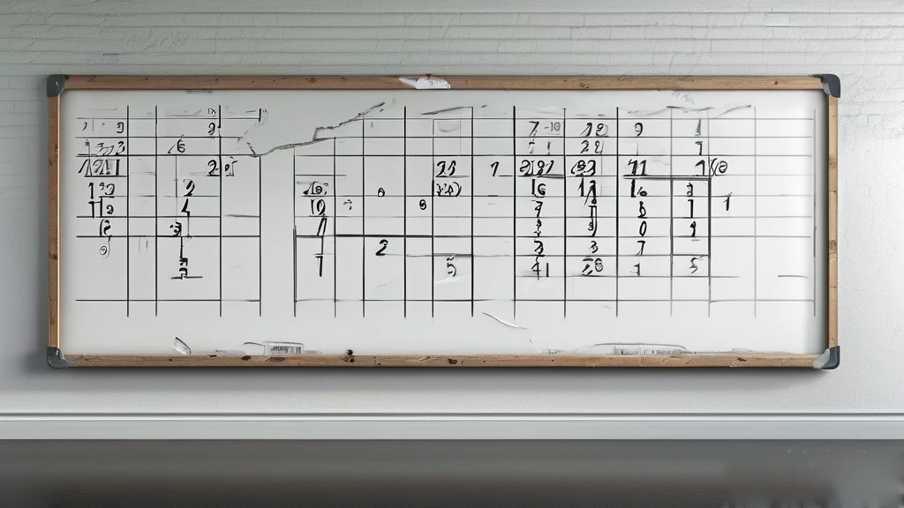
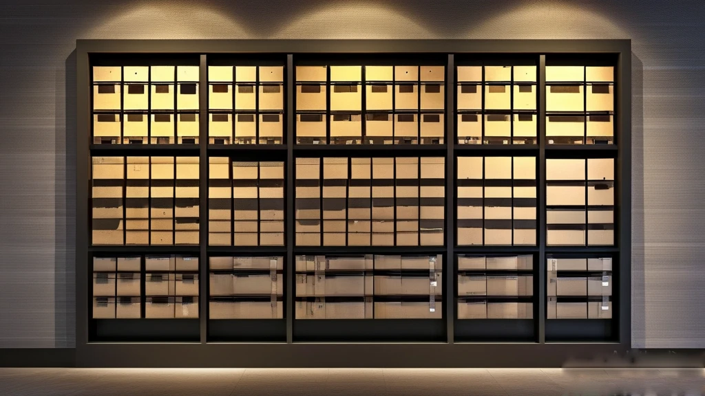

圖片由 AI輔助創作（Kolors）Image by AI (Kolors)
【鄭哥點評】欄目：鄭哥博客點評｜日期：2026-11-13
前排睇到一篇講「SaaS 建站 SEO 避坑」嘅文章，頭半篇我一路睇一路點頭，睇到最後一段，發現原來係賣嘢。我唔反對人賣嘢——我自己都賣嘢——但呢種寫法值得拆一拆：邊幾句係真技術判斷，邊幾句係用嚟撐氣勢嘅假數字。

圖片由 AI輔助創作（Kolors）Image by AI (Kolors)
一、真嘅部分：模板、代碼、權限，呢三樣真係會卡死人
先講對嘅。文章話通用 SaaS 產品有三大結構性問題：模板固化、代碼封閉、權限鎖死。呢三樣，我一個都唔會駁。
因為 canonical 標籤、301 跳轉、404 頁、robots.txt、sitemap 呢啲嘢，全部喺「網站根目錄」同「頁面頭部」呢兩個層次——唔開放畀你，你就算有幾好嘅內容策略，都只係喺一堆你改唔到嘅結構上面貼圖文。
我自家個站就係反面例子：每一頁嘅 canonical、結構化數據、sitemap 同站內搜尋索引，都係我自己產生、自己推上去嘅。所以「改一個標籤」對我嚟講係五分鐘嘅事；對一個模板站嚟講，係「對唔住，呢個要等產品部排期」。呢個差距，唔係錢嘅差距，係權限嘅差距。
百度搜索資源平台嘅《搜索資源平台使用指南》講得好清楚：抓取診斷、sitemap 提交、robots 設置，都係站長自己喺後台做嘅基本動作。問題係——如果平台唔畀你碰根目錄，呢啲官方工具你用都無從用起。
來源：百度搜索資源平台《搜索資源平台使用指南》｜https://ziyuan.baidu.com/college/articleinfo?id=3329

圖片由 AI輔助創作（Kolors）Image by AI (Kolors)
二、唔真嘅部分：兩個「精確到小數」嘅數字
文章有兩句，我睇完停低咗。第一句：「行業數據顯示，同模板站點佔比過高時，域名整體原創度評分會持續走低，新頁面收錄成功率下降 40% 以上。」第二句：「實測數據顯示，頁面冗餘代碼每增加 15%，頁面加載速度下降 20%。」
兩句都寫住「行業數據顯示」同「實測數據顯示」。但樣本幾大？邊個測？口徑係乜？全部冇。一篇三千字嘅文章，用兩個咁精確嘅數字，卻一個出處都唔畀。
我嘅判斷係：方向可能對，數字係作出嚟嘅。冗餘代碼確實拖慢頁面，同質化模板確實有風險——呢啲都合邏輯；但「跌四成」「慢兩成」呢種精確度，冇公開研究支撐得起。
呢個係內容行業嘅通病：用一個唔存在嘅數字，去支撐一個大致正確嘅方向。讀者事後記住嘅係個數字，唔係個方向——而個數字，係假嘅。
來源：今日頭條《SaaS建站SEO避坑：模板固化、代碼封閉等常見選型誤區拆解》（卡皮巴拉在野區），2026-10-19｜https://www.toutiao.com/article/7698322190105592355/

圖片由 AI輔助創作（Kolors）Image by AI (Kolors)
三、最要留意：文章最後落到邊個平台
文章中段做咗一個「主流建站平台 SEO 能力橫向對比」，四行表格：兩個平台寫到中規中矩，另外兩個名字——彼確定制、廷書建站——公開資料幾乎查唔到，一個被評「基礎適配」、一個被評「高度適配但只適配大型企業」。
跟住結論自然出現：通用輕量平台有短板，高端定制太貴，於是「某平台在同價位產品中具備突出優勢」。
呢個結構我太熟：先立一個標準（模板自由度、代碼權限、根目錄部署），再用對比表做排除法，最後只剩一個選項。唔係罪——但你睇嘅時候要清楚，自己睇緊嘅係評測，定係廣告。
順帶講一句：Bing 官方嘅站長指引（Bing Webmaster Tools Help）講嘅係內容質量、可抓取性、清晰結構呢類基本要求，從來冇一條講「模板同質化會令收錄率跌四成」——因為呢個數字唔存在於任何官方文件。
來源：Bing Webmaster Tools Help《Bing Webmaster Tools - Help Documentation》｜https://www.bing.com/webmasters/help/webmasters-guidelines-30fba23a
圖片由 AI輔助創作（Kolors）Image by AI (Kolors)
四、選型真正要問嘅四個問題
第一，我改唔改得到 canonical、301、404？呢三樣係收錄嘅地基。改唔到，你唔係喺優化，你係喺修補。
第二，我碰唔碰得到根目錄？robots.txt、sitemap、搜索引擎嘅站點驗證檔，全部要放喺根目錄。碰唔到，官方站長工具一半功能你用唔到。
第三，我走嘅時候，資料帶唔帶得走？文章講「數據遷移壁壘」呢一點，係全文最值錢嘅一句。我見過太多公司，SEO 做得唔錯，想換站先發現文章、URL 結構、收錄記錄全部攞唔走，幾年功夫一夜清零。
第四，收費版解鎖嘅係「功能」定係「權限」？功能可以等——少一個表單、少一個模板，你照樣做生意；權限決定生死——改唔到 canonical，你嘅內容寫得再好都上唔到位。
來源：今日頭條《SaaS建站SEO避坑：模板固化、代碼封閉等常見選型誤區拆解》（卡皮巴拉在野區），2026-10-19｜https://www.toutiao.com/article/7698322190105592355/
圖片由 AI輔助創作（Kolors）Image by AI (Kolors)
五、鄭哥點評
呢篇文章嘅技術判斷七成對，但佢用一個唔存在嘅精確數字，去支撐一個大致正確嘅方向。呢個組合最難防——因為你反駁唔到方向，又驗證唔到數字。
選型唔係揀最強，係揀你三年後走得甩嗰個。今日最強嘅功能，明年就係標配；今日鎖死嘅權限，三年後仍然鎖死。
所以簽約前，唔好睇 PPT，叫對方開個後台帳號畀你試三件事：改一個 canonical、傳一個 robots.txt、導出一份內容。三分鐘試完，好過聽四十頁承諾。
最後一句：模板可以換，權限換唔返。你唔需要一個完美嘅建站工具，你需要一個唔會綁死你嘅工具。
圖片由 AI輔助創作（Kolors）Image by AI (Kolors)
\[Zheng Ge's Take\] Column: Zheng Ge's blog commentary | Date: 2026-11-13
I read an article recently about avoiding SEO traps when building a site on a SaaS platform. For the first half I was nodding along; by the last section I realised it was a sales piece. I have nothing against selling - I sell things myself - but the way it is built deserves taking apart: which sentences are real technical judgement, and which are invented numbers used for momentum.
圖片由 AI輔助創作（Kolors）Image by AI (Kolors)
1. The true part: templates, code and permissions really do strangle a site
Let me start with what is right. The article says generic SaaS builders carry three structural problems: frozen templates, closed code and locked permissions. I would not argue with any of the three.
The reason is that canonical tags, 301 redirects, 404 pages, robots.txt and sitemaps all sit at two levels - the site root and the page head. If those are not open to you, then no matter how good your content strategy is, you are pasting text and pictures onto a structure you cannot change.
My own site is the counter-example: every page's canonical, its structured data, the sitemap and the on-site search index are generated and pushed by me. Changing a tag takes five minutes. On a template platform it takes a ticket and a product roadmap. That gap is not a gap in money, it is a gap in permission.
Baidu's Search Resource Platform guide is explicit that crawl diagnostics, sitemap submission and robots settings are basic chores a site owner performs in the console. The catch: if the platform will not let you touch the root directory, none of those official tools are available to you at all.
Source: 百度搜索資源平台《搜索資源平台使用指南》 | https://ziyuan.baidu.com/college/articleinfo?id=3329
圖片由 AI輔助創作（Kolors）Image by AI (Kolors)
2. The untrue part: two figures precise to the percentage point
Two sentences made me stop. The first: 'Industry data shows that when too many sites share one template, a domain's overall originality score keeps falling and the success rate for indexing new pages drops by more than 40 per cent.' The second: 'Measured data shows that for every 15 per cent increase in redundant code, page load speed falls by 20 per cent.'
Both are introduced as industry data and measured data. How large was the sample? Who measured it? What was the method? Nothing. A three-thousand-character article spends two figures of that precision and offers not one source.
My reading: the direction may be right, the numbers are invented. Redundant code does slow pages down; template homogeneity is a real risk. Both are logical. But 'down 40 per cent' and 'slower by 20 per cent' is a level of precision no public study can support.
This is a habit of the content industry: use a number that does not exist to prop up a direction that is broadly correct. The reader remembers the number, not the direction - and the number is fake.
Source: 今日頭條《SaaS建站SEO避坑：模板固化、代碼封閉等常見選型誤區拆解》（卡皮巴拉在野區），2026-10-19 | https://www.toutiao.com/article/7698322190105592355/
圖片由 AI輔助創作（Kolors）Image by AI (Kolors)
3. The part to watch most: where the article ends up
Halfway through, the piece runs a 'side-by-side comparison of SEO capability across mainstream builders' with four rows: two platforms described in moderate terms, and two names - Beique Custom and Tingshu - for which almost nothing can be found publicly, one judged 'basic', the other 'highly capable but only for large enterprises'.
Then the conclusion arrives on its own: generic lightweight platforms have shortcomings, high-end custom work is too expensive, and therefore 'one platform holds a clear advantage at the same price point'.
I know this structure well: establish the criteria (template freedom, code access, root deployment), use a comparison table to eliminate options, leave exactly one. There is no crime in it - but when you read it you should know whether you are reading a review or an advertisement.
One footnote: Bing's official webmaster guidance talks about content quality, crawlability and clear structure. Not one line says template homogeneity cuts indexing rates by forty per cent - because that figure does not exist in any official document.
Source: Bing Webmaster Tools Help《Bing Webmaster Tools - Help Documentation》 | https://www.bing.com/webmasters/help/webmasters-guidelines-30fba23a
圖片由 AI輔助創作（Kolors）Image by AI (Kolors)
4. The four questions that actually decide the choice
First: can I change canonical, 301 and 404? Those three are the foundation of indexing. If I cannot change them, I am not optimising, I am patching.
Second: can I reach the root directory? robots.txt, sitemaps and search-engine verification files all have to live there. If I cannot reach it, half the official webmaster tools are closed to me.
Third: when I leave, can I take the data? The article's point about a migration barrier is the most valuable line in it. I have seen too many companies doing decent SEO discover that when they want to switch platforms, the articles, URL structure and indexing history cannot be exported - years of work reset overnight.
Fourth: does the paid tier unlock features or permissions? Features can wait - one fewer form, one fewer template, and you still trade. Permissions decide whether you live: if you cannot touch canonical, no amount of good writing will rank.
Source: 今日頭條《SaaS建站SEO避坑：模板固化、代碼封閉等常見選型誤區拆解》（卡皮巴拉在野區），2026-10-19 | https://www.toutiao.com/article/7698322190105592355/
圖片由 AI輔助創作（Kolors）Image by AI (Kolors)
5. Zheng Ge's Take
Seventy per cent of this article's technical judgement is right, but it props a broadly correct direction on a precise number that does not exist. That combination is the hardest to defend against, because you cannot argue with the direction and you cannot verify the number.
Choosing a platform is not about picking the strongest one; it is about picking the one you can walk away from in three years. Today's best feature is next year's standard. Today's locked permission is still locked in three years.
So before signing, skip the deck. Ask for a trial account and test three things: change a canonical, upload a robots.txt, export your content. Three minutes of testing beats forty slides of promises.
One last line: a template can be replaced, a permission cannot be taken back. You do not need a perfect website builder. You need one that will not tie you down.